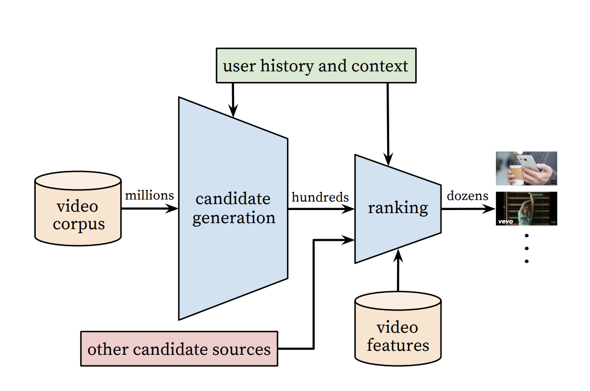
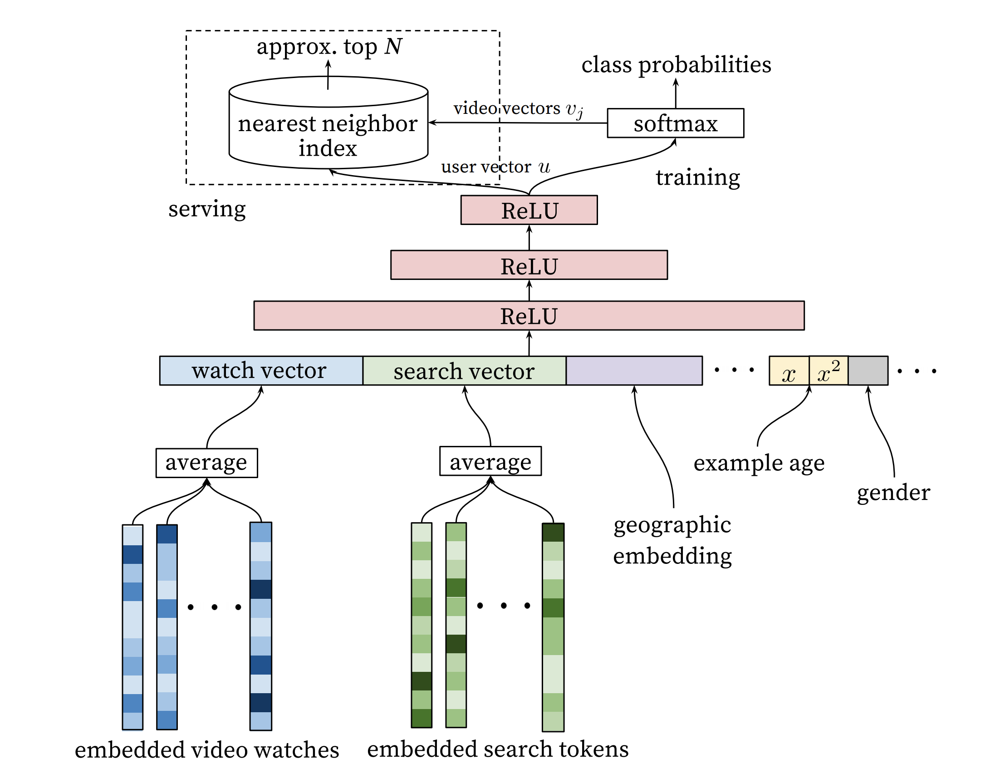
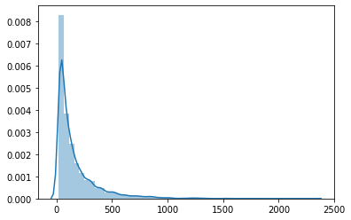
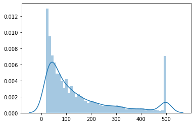
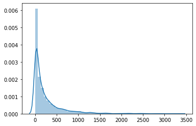
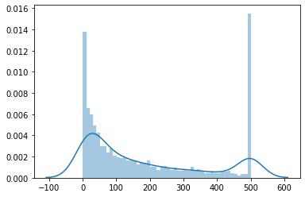

这一篇中, 将会介绍著名的YouTubeNet, 着重于其召回部分, 并进行简单地代码复现.
前言
对原文Deep Neural Networks for YouTube Recommendations感兴趣的同学, 可以点这里.
这篇论文大概讲了个啥事呢, 就是说对于YouTube这家很大的视频分享网站来说, 能够快速地, 精准地推荐给用户喜欢的视频, 以提高用户的观看时长, 是有效提高其商业利润的关键. 据此, YouTube整体采用了召回-排序的系统架构, 如下图:

第一级用候选集生成模型(Candidate Generation Model)完成对海量候选视频的快速筛选; 第二级采用排序模型(Ranking Model), 完成对几百个候选视频的精排.
本文重点介绍YouTubeNet的召回部分, 因为我认为其具有一定的通用性与代表性.
下文中的YouTubeNet都是指的召回部分的模型.
原理
回想前面介绍的一些召回方法, 如协同过滤一类的模型, 对于这类模型来说, 一个很明显的特征就是只使用到了用户与物品的ID信息.
但是实际上, 还有一些其它特征是可以拿来使用的, 理论上更多的信息一般可以带来更好的, 至少是不一样的效果, 所以是有必要进行尝试的.
而YouTubeNet正是很好地在模型中, 加入了更多的信息, 同时也维持了工程上的实用性, 下面来对YouTubeNet进行具体的讲解.

模型结构如上图, 我们从下往上来说.
最下面的是特征输入层, 图中包含了如下一些特征:
- 用户历史观看视频Embedding.
- 搜索词Embedding.
- 地理属性特征Embedding.
- 样本年龄.
- 性别.
其中前面的一些Embedding, 可以是一些通过其他方法(如item2vec)预训练好的向量. 样本年龄, 指的应该是目标推荐视频的上传时间, 距离推荐预测时的时间间隔, 其目的是说, 一个视频通常在刚上传的一段时间有较高热度, 而后下降, 通过这个特征可以来对这种情况进行刻画. 性别当然就是用户的一些基础特征了.
上面的特征有什么共同特点吗, 是的, 它们都是用户侧的特征. 为什么不加物品侧的特征呢, 这与整体的模型设计架构有关, 接着往上看.
在有了特征以后, 往上就是常见的全连接神经网络MLP了, 没啥好说的.
然后是最上面, 咋一看有些复杂, 先看右边的训练部分.
YouTubeNet在训练时, 学习任务是”predicting the next watched video”, 即一个多分类问题, 通过用户的信息, 预测用户下一次会观看哪个视频.
MLP最后一层ReLU输出的向量, 可以当做是用户的Embedding, 因为前面说了, 底层特征全是关于用户的信息.
而softmax层, 可以看成一个$k\times n$的矩阵(最后一层ReLU输出的向量维度为$k$, 物品数量为$n$), 此时YouTubeNet比较精髓的地方来了, 物品的Embedding, 可以用$k\times n$矩阵中的权重系数来进行表示! 物品向量与用户向量都是$k$维, 当两者内积较大时, 表明用户会观看该视频.
接下来考虑一个问题, 这个模型训练好了以后, 怎么使用呢? 作为一个召回模型, 应该能够快速地在海量视频中, 捞出候选集, 如果是这样一个多分类模型的话, 那么是跑一遍模型, 然后将输出概率较大的一些视频作为候选集吗?
这里就要说到一个效率问题了, 对于预测目标很多(海量视频)的softmax来说, 运算一次是费劲的. 所以在训练时, 可以使用负采样的方法.
负采样, 永远滴神!
而在训练完, 进行召回服务的时候, 是不需要再过一遍模型的. 前面说到了, MLP的最后一层可以当做用户的Embedding, softmax对应的矩阵, 可以当做物品的Embedding. 可以把这些Embedding事先进行存储, 然后要对某个用户进行召回时, 直接拿该用户的Embedding, 去物品的Embedding集中使用某种方法进行最近邻检索, 筛选出TOP-N个物品, 可以非常地快.
如果不去深究某些特别细节的东西, YouTubeNet是朴实无华的, 总结一下其整体流程:
- 训练.
- 输出用户侧特征.
- 经过MLP得到用户Embedding.
- 经过softmax预测用户是否观看视频.
- softmax矩阵表示物品Embedding, 可用负采样训练.
- 服务.
- 储存用户与物品的Embedding.
- 给定用户Embedding, 使用最近邻算法检索出TOP-N物品.
代码
数据准备
这里使用的数据, 仍然是经典的movielens的MovieLens 1M Dataset.
其中包含约100万的用户对电影的打分记录, 由约6000用户对约4000电影打分而得到.
包含3份数据, 一份是打分文件”rating.dat”, 格式为用户ID::电影ID::打分::时间戳, 并且:
- 用户ID在1到6040之间.
- 电影ID在1到3952之间.
- 打分有5个等级.
- 每个用户至少有20条打分记录.
一份是用户文件”user.dat”, 格式为用户ID::性别::年龄::职业::邮编.
还有一份电影文件”movies.dat”, 格式为电影ID::电影名称::风格流派.
这里有具体的每个用户给每个电影的打分, 这里为了模拟负采样下二分类的学习任务, 将对根据每个用户整体的打分水平, 将其中打分偏高的作为正样本, 打分偏低的作为负样本.
而对于用户侧的信息, 这里仅选择直接给到的特征:
- 用户ID.
- 性别.
- 年龄.
- 职业.
在数据预处理的过程中, 为了保证模型能够有效学习, 把记录过少的用户与电影进行过滤, 同时对于过于活跃的用户以及被观看次数过多的电影, 进行随机下采样.
1 | # 读取数据 |
1 | [['1', '1193', '5', '978300760'], |
1 | n_user = len(set([x[0] for x in data_list])) |
1 | (6040, 3706) |
1 | # 统计分析数据集中的用户观看影片数量分布 |

1 | # 对观看影片多于500的用户进行随机抽样, 避免样本占比过多影响模型学习 |

1 | # 统计分析数据集中的影片被观看次数分布 |

1 | # 对被观看多于500的电影进行随机抽样, 避免样本占比过多影响模型学习 |

1 | len(data_list), len(data_list) * 0.7 |
1 | (662366, 463656.19999999995) |
1 | # 添加用户其它信息 |
| user_id | gender | age | occupation | zip | |
|---|---|---|---|---|---|
| 0 | 1 | F | 1 | 10 | 48067 |
| 1 | 2 | M | 56 | 16 | 70072 |
| 2 | 3 | M | 25 | 15 | 55117 |
| 3 | 4 | M | 45 | 7 | 02460 |
| 4 | 5 | M | 25 | 20 | 55455 |
1 | user_set = set([x[0] for x in data_list]) |
1 | [['4959', '2394', '4', '962634004', 1, 2, 9], |
1 | # 根据每个用户的打分, 把样本分为正/负样本 |
1 | # 按时间戳排序, 并按排序划分训练集/测试集 |
1 | (463656, 198710) |
1 | # 将训练集中, 影片被观看次数少于20的剔除 |
1 | 456504 |
1 | # 将训练集中, 观看影片次数少于20的用户删除 |
1 | # 将测试集中, 没有在训练集出现过的物品剔除 |
1 | 194354 |
1 | # 将测试集中, 没有在训练集出现过的用户剔除 |
1 | 66537 |
1 | # 整理用户, 电影的编号 |
1 | # user_id, gender, age, occupation, item_id |
1 | array([4177, 1, 6, 20, 2716]) |
模型训练
1 |
|
1 | import tensorflow as tf |
1 | keras.backend.clear_session() |
1 | Epoch 1/100 |
1 | model.evaluate(test_dataset, test_y) |
1 | 2080/2080 [==============================] - 4s 2ms/step - loss: 0.6245 - auc: 0.7276 |
小结
上面介绍了YouTubeNet召回部分的模型, 由于本身是工业界提出的算法, 并不是特别复杂, 比较容易实现, 同时对于实际的业务场景也比较友好.
相比协同过滤一类的召回算法, YouTubeNet在保证了仍然可以用训练好的Embedding向量进行最近邻检索, 以维持快速响应外, 在用户侧加入了除ID以外的更多用户信息, 理论上可以获得更好的效果.